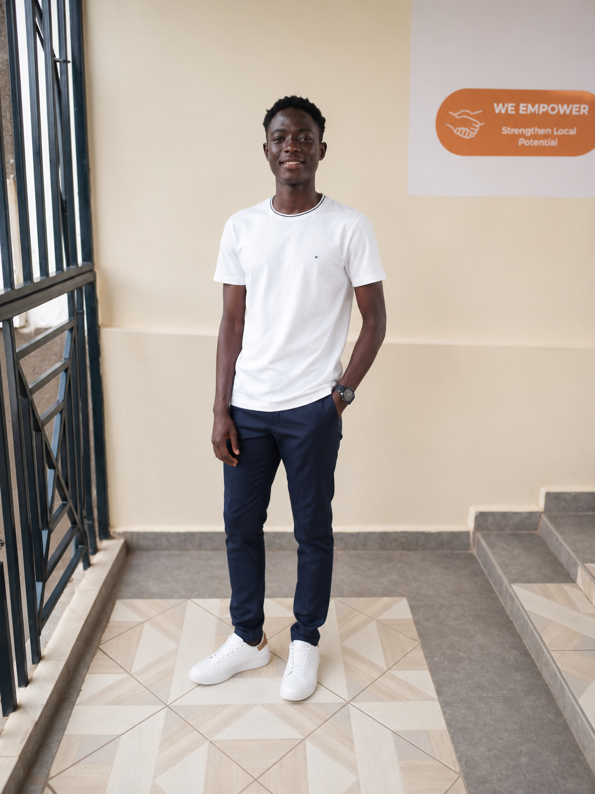

Frontend Developer specializing in HTML, CSS, JavaScript and React. I build responsive websites, web applications and digital solutions that focus on performance, user experience and real-world impact.
View Projects Learn More Download CV
I am a dedicated and motivated web developer with a strong foundation in software development and a passion for creating innovative digital solutions. My experience includes front-end development, responsive web design, and database management. I am committed to delivering high-quality work and continuously learning new technologies to provide the best possible solutions for clients and users.
Creating responsive and user-friendly websites and web applications.
Designing and implementing robust software solutions.
Conducting and participating in impactful research projects.
Developing modern, responsive, and efficient web applications using current web technologies.
HTML5, CSS3, JavaScript, React, Responsive Design
Node.js, APIs, Authentication Systems
MySQL, MongoDB, Data Design
Git, GitHub, VS Code, Termux
Student attendance and tracking system with reporting, security controls, and school management features.
SaaS WhatsApp bot deployment platform featuring subscriptions, deployment management, and automation.
Modern responsive portfolio showcasing skills, projects, and professional experience.
Projects Completed
Commitment to Quality
Continuous Learning
I focus on creating clean, efficient, and user-friendly digital solutions. My goal is to deliver projects that are reliable, scalable, and tailored to client needs.
Email: smarttechjley@gmail.com
Phone: +254 702 946 278
Available for freelance work, consultations, collaborations, and software development projects.
Chat on WhatsApp